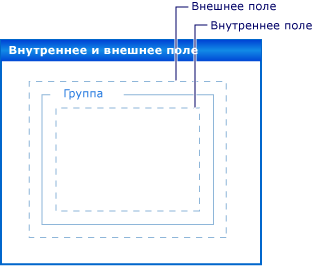

Поля и заполнение в элементах управления Windows Forms
Точное расположение элементов управления на форме является важным для многих приложений. Пространство имен System.Windows.Forms предоставляет множество возможностей компоновки для решения этой задачи. Свойства Margin и Padding — одни из наиболее важных.
Свойство Margin определяет поле вокруг элемента управления, благодаря которому обеспечивается определенное расстояние между границами этого элемента и другими элементами.
Свойство Padding определяет поле внутри элемента управления, благодаря которому обеспечивается определенное расстояние между содержимым элемента управления (например, значением свойства Text) и его границами.
На рисунке ниже демонстрируется значение свойств Padding и Margin элемента управления.

Эта возможность поддерживается во время разработки в Visual Studio. Также см. в разделе Пошаговое руководство: Размещение Windows Forms элементы управления с помощью свойств Padding, Margins и свойство AutoSize.